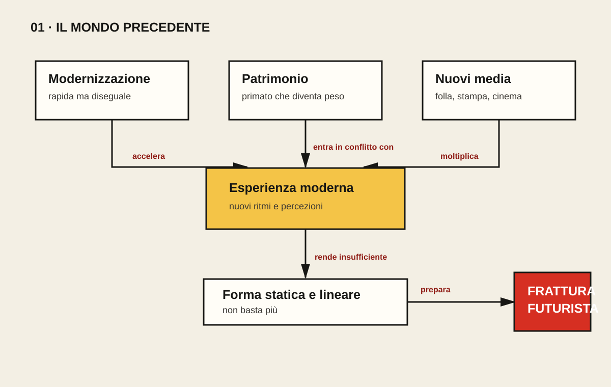

01 / IL MONDO PRECEDENTE
Una nazione antica entra nella modernità
Il Futurismo nasce dove il culto del passato incontra fabbriche, folle, giornali e velocità. La tensione non è lo sfondo: è il problema da risolvere.
Tesi. Il Futurismo nasce dalla collisione tra due Italie: una nazione che fonda il proprio prestigio sul patrimonio storico e una società che scopre, in modo rapido e diseguale, l'industria, la metropoli e la comunicazione di massa.
Il ritardo come esperienza della modernità
All'inizio del Novecento l'Italia è uno Stato unitario da pochi decenni. Il decollo industriale si concentra soprattutto nel triangolo Milano–Torino–Genova, mentre vaste aree del paese restano agricole e segnate dall'emigrazione. L'età giolittiana porta riforme, allargamento della partecipazione politica e crescita produttiva, ma non cancella conflitti sociali e squilibri territoriali. La modernizzazione è dunque reale e insieme incompleta: non si presenta come un ordine stabile, bensì come un'accelerazione che modifica paesaggi e abitudini prima ancora di essere compresa.
La fabbrica, l'elettricità, il tram, l'automobile e le grandi stazioni trasformano la percezione. Il cittadino riceve più stimoli, si muove più rapidamente, incontra folle anonime e vive in un ambiente sonoro nuovo. Non è corretto dire che la macchina produca automaticamente il Futurismo; è più preciso affermare che offre agli artisti un'esperienza per la quale le forme tradizionali sembrano insufficienti. Il movimento farà di questa insufficienza un programma.
L'Italia-museo e il bisogno di un altro primato
Il patrimonio classico e rinascimentale è una risorsa, ma agli occhi dei futuristi diventa anche un peso. L'Italia è riconosciuta in Europa come terra di rovine, musei e turismo colto: possiede un primato fondato su ciò che è stato, non su ciò che sta costruendo. L'antipassatismo marinettiano radicalizza questa inquietudine. Quando il manifesto attacca musei, biblioteche e accademie non formula una politica culturale praticabile; mette in scena un parricidio simbolico. Per ottenere attenzione, sostituisce l'argomentazione misurata con l'iperbole distruttiva.
Qui emerge una prima ambivalenza. Il Futurismo vuole liberare la creatività dall'obbligo di imitare i maestri, ma trasforma la tradizione in un nemico assoluto. Confonde spesso la critica dell'autorità culturale con la cancellazione della memoria. La sua domanda resta tuttavia autentica: può una cultura vivere soltanto amministrando il proprio passato? Il movimento risponderà di no, ma lo farà con un linguaggio che anticipa la propria inclinazione alla violenza.
Letteratura dominante, pubblico nuovo
Nel campo letterario la figura ingombrante è Gabriele d'Annunzio. Marinetti ne rifiuta l'estetismo, la preziosità e il culto della bellezza ereditata, ma ne apprende molto: la fusione fra arte e vita, la costruzione pubblica dell'autore, l'uso spettacolare dei media, il nazionalismo e l'idea dello scrittore come guida. Il Futurismo non nasce quindi dal nulla. Combatte il proprio predecessore anche perché gli somiglia. Accanto a d'Annunzio, i crepuscolari rispondono alla crisi del poeta con toni dimessi, ironia e ripiegamento quotidiano. I futuristi scelgono la direzione opposta: volume alto, provocazione, piazza.
Anche il pubblico è cambiato. Quotidiani, riviste illustrate, pubblicità e manifesti murali costruiscono una sfera comunicativa più ampia. La pubblicazione della fondazione del movimento su Le Figaro il 20 febbraio 1909 mostra che Marinetti comprende la notizia come parte dell'opera. Un manifesto non descrive soltanto un gruppo già esistente: lo crea davanti ai lettori, gli assegna un nome e trasforma la polemica in evento.
Nuovi occhi, nuovi tempi
Fotografia, cronofotografia e cinema rendono visibile la scomposizione del movimento. La scienza e la tecnica non offrono soltanto temi moderni; suggeriscono che un gesto possa essere pensato come successione di fasi e che più istanti possano essere presentati insieme. Nelle arti europee il Cubismo sta già mettendo in crisi il punto di vista unico. I futuristi assorbiranno queste ricerche e le orienteranno verso il dinamismo, la durata, la compenetrazione fra corpo e ambiente.
Il mondo ricevuto è dunque attraversato da una contraddizione: la vita accelera, mentre il linguaggio artistico appare legato alla descrizione ordinata, alla sintassi lineare e all'oggetto fermo. Questa percezione prepara la frattura. I futuristi non si limiteranno a rappresentare automobili o officine; sosterranno che, per dire una realtà nuova, occorra rompere le istituzioni, i comportamenti e perfino la struttura della frase.
In 160 parole
Il Futurismo nasce nell'Italia giolittiana, segnata da un'industrializzazione rapida ma concentrata, da forti squilibri sociali e dall'esperienza nuova della metropoli. Macchine, elettricità, trasporti, folla e stampa di massa modificano la percezione del tempo e dello spazio. Contemporaneamente, l'identità culturale italiana resta fondata sul patrimonio classico e rinascimentale: per i futuristi questo prestigio del passato rischia di diventare immobilità. L'attacco a musei e accademie è perciò un parricidio simbolico, espresso però con un linguaggio già violento. In letteratura d'Annunzio è insieme modello e avversario: Marinetti ne respinge l'estetismo, ma ne riprende l'autopromozione e la fusione tra arte e vita. I crepuscolari scelgono invece toni dimessi, opposti alla provocazione futurista. Fotografia, cinema e Cubismo mostrano infine che movimento e pluralità dei punti di vista richiedono forme nuove. La tensione decisiva è questa: una vita accelerata sembra non poter più essere detta con un linguaggio statico e lineare.
Saperi irrinunciabili
- Spiegare perché la modernizzazione italiana fu rapida ma diseguale.
- Distinguere la macchina come esperienza storica dalla macchina come mito futurista.
- Interpretare l'antipassatismo come parricidio culturale, non come semplice odio della storia.
- Illustrare il rapporto ambivalente con d'Annunzio.
- Confrontare la risposta futurista e quella crepuscolare alla crisi del poeta.
- Collegare stampa di massa e forma-manifesto.
Vocabolario essenziale
- Modernizzazione
- Trasformazione economica, urbana, tecnica e sociale, non uniforme nel paese.
- Antipassatismo
- Rifiuto polemico dell'autorità culturale attribuita al passato.
- Avanguardia
- Gruppo che si presenta come anticipatore e organizza una rottura programmatica.
- Metropoli
- Spazio di folla, velocità e stimoli simultanei.
- Manifesto
- Testo pubblico che proclama principi e produce identità collettiva.
- Cronofotografia
- Tecnica che scompone il movimento in fasi successive.
